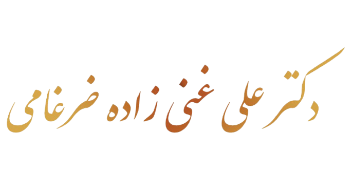
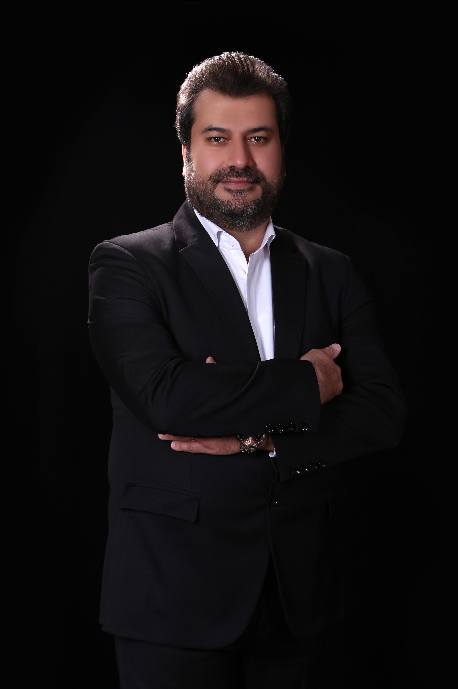
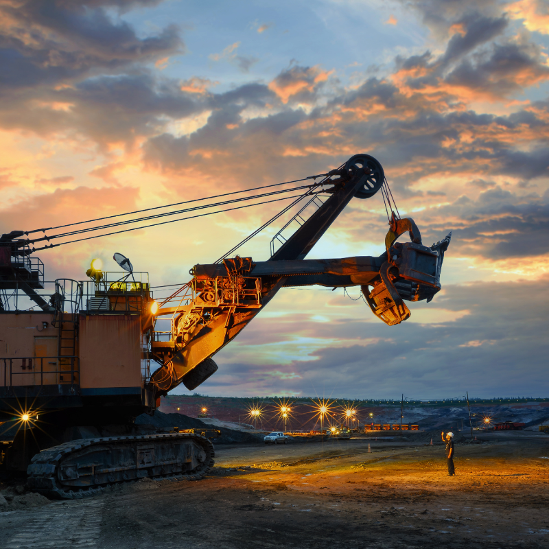

طراحی معادن روباز و زیرزمینی
طراحی پیت، رمپ، جاده، برنامهریزی تولید و مدلسازی ذخایر با نرمافزارهای تخصصی.

دکتری مهندسی استخراج معدن و مکانیک سنگ
استاد دانشگاه و مدرس سازمان نظام مهندسی معدن
مدیر عامل و رئیس هیات مدیره شرکت زمین کاوان قرن
عضو هیات مدیره هلدینگ قرن
عضو هیات مدیره شرکت فیدار فارمد سدیر قرن
عضو كانون شوراى عالى كارشناسان رسمى دادگستری
عضو اتاق بازرگانى، صنايع و معادن استان تهران
عضو سازمان نظام مهندسی معدن استان تهران
متخصص امور طراحى معادن، طراحى عمليات انفجار
ارزيابى ذخاير معدنى، ارزش گذارى معادن، محاسبات فنى و اقتصادى

دکتر علی غنی زاده ضرغامی با تحصیلات تخصصی در مهندسی استخراج معدن و مکانیک سنگ، در حوزه طراحی معادن روباز و زیرزمینی، طراحی انفجار، ارزیابی ذخایر، مکانیک سنگ، امکانسنجی و تحلیل فنی و اقتصادی پروژههای معدنی و صنعتی فعالیت دارد.
ارزيابى دقيق ذخاير معدنى و تدوين برنامه ريزى توليد مبتنى بر شاخصهاى عملياتى معدن.
تحليل فنى و اقتصادى پروژه هاى معدنى با رويكرد كاهش ريسك و افزايش بهرهورى سرمايهگذارى.
محاسبه حقوق معدنى و ارزش گذارى اقتصادى معادن با اتكا به دادههاى واقعى و استانداردهاى حرفهاى.
طراحى مهندسى معادن و تدوين پترن هاى انفجار بهينه براى افزايش راندمان و كاهش هزينه عمليات.
طراحی پیت، رمپ، جاده، برنامهریزی تولید و مدلسازی ذخایر با نرمافزارهای تخصصی.
طراحی الگوهای انفجار، محاسبه خرج ویژه، کاهش هزینه و کنترل پارامترهای عملیاتی.
تحلیل پایداری، ریزش بلوکی، درزهنگاری، تنشها و طراحیهای مکانیک سنگی.
طراحی شبکه اکتشافی، تخمین ذخیره، مدلسازی سهبعدی و تحلیل دادههای اکتشافی.
تهیه BP و FS، تحلیل مالی، ارزشگذاری، Comfar و تحلیل حساسیت پروژهها.
Septaria، SurSoft، مونیتورینگ، دیسپاچینگ و توسعه ابزارهای محاسبات معدنی.
تحصیلات دانشگاهی، پایاننامهها و تحصیلات جانبی
مشخصات فردی و تحصیلات
مروری بر اطلاعات فردی و مسیر تحصیلی در حوزه مهندسی استخراج معدن و مکانیک سنگ.
نام: علی غنیزاده ضرغامی
مدرک تحصیلی: دکتری مهندسی استخراج معدن و مکانیک سنگ
دانشکده معدن و ژئوفیزیک، دانشگاه صنعتی شاهرود — عنوان پایاننامه: طراحی نرمافزار Septaria جهت محاسبه فاکتور ایمنی و احتمال شکست پله در معادن روباز.
دانشکده فنی و مهندسی، دانشگاه علوم و تحقیقات تهران — عنوان پایاننامه: طراحی و ساخت سیستم مانیتورینگ و دیسپاچینگ ماشینآلات در معادن.
دانشکده فنی و مهندسی، دانشگاه علوم و تحقیقات تهران — رساله: ارائه مدل فنی و اقتصادی جهت محاسبه خرج ویژه آنفو در عملیات حفاری و انفجار در معادن مس ایران.
لیسانس مهندسی فناوری اطلاعات (گرایش برنامهنویسی)، دانشگاه انفورماتیک ایران.
کتابها، نرمافزارها، افتخارات و فعالیتهای ملی
افتخارات کشوری و تالیفات
سوابق افتخارات حرفهای، تالیف کتابها و توسعه راهکارهای نرمافزاری در حوزه معدن و صنایع وابسته.
طراحی معدن، مکانیک سنگ، نرمافزارها و برنامهنویسی
مهارتهای فنی
توانمندیهای تخصصی در طراحی معدن، مکانیک سنگ، اقتصاد مهندسی، نرمافزارهای معدنی و ابزارهای تحلیلی.
Comfar، امکانسنجی، JORC، برنامهریزی و طراحی معادن
طرحهای فنی، اقتصادی و طراحی معادن
خلاصه خدمات مشاوره، طراحی و تحلیل اقتصادی در پروژههای صنعتی و معدنی با رویکرد تصمیمسازی مبتنی بر داده.
تسلط به اصول اقتصاد مهندسی و کار با COMFAR III (UNIDO)، تحلیل و آنالیز پروژههای فنی/مهندسی، و طراحی فرآیندهای تولید از مرحله طرح تا اخذ مجوزها و تسهیلات مالی.
انجام مطالعات امکانسنجی و تحلیل اقتصادی برای بیش از ۵۰۰ پروژه و ارائه طرحهای توجیهی؛ همکاری مشاورهای با بیش از ۵۰۰ واحد صنعتی و معدنی در کشور.
طراحی شبکههای اکتشافی، زمینآماری، طراحی لاگهای زمینشناسی، تخمین ذخیره، مدلسازی ذخایر زیرزمینی و آشنایی با استاندارد JORC.
طراحی روشهای استخراج و برنامهریزی تولید معادن سطحی، محاسبات فنی، طراحی رمپ و سیستم حملونقل داخلی معدن، و مشاوره طراحی با Datamine، Leapfrog و Surpac.
دانشگاهها، سازمانها و دورههای تخصصی مهندسی معدن
سوابق تدریس و دورهها
خلاصهای از سوابق تدریس دانشگاهی، آموزشهای تخصصی و برگزاری دورههای مهندسی معدن در سطوح ملی و استانی.
تدریس در دانشگاه صنعتی شاهرود، دانشگاه جامع علمی و کاربردی و مؤسسات آموزشی دروس استاتیک، مقاومت مصالح، مکانیک سیالات، اقتصاد مهندسی، حفاری و انفجار و برنامهنویسی.
مدرس دورههای تخصصی COMFAR III، Datamine، Surpac، Surfer و سایر ابزارهای فنی و اقتصادی معدن در سطح ملی و استانی.
برگزاری دورههای تخصصی برای سازمان نظام مهندسی معدن، وزارت صنعت، معدن و تجارت و مجموعههای خصوصی در حوزه طراحی معدن و بهرهبرداری.
طراحی رمپ و جاده معادن، برنامهریزی تولید با NPV، COMFAR، Datamine، Surfer، GPS، مانیتورینگ و دیسپاچینگ ماشینآلات و طراحی انفجار.
دارای گواهینامهها و سوابق مربیگری در COMFAR III، Datamine و دورههای بینالمللی مرتبط با مهندسی معدن.
تحقیق، توسعه، مشاوره داخلی و بینالمللی
تحقیقات، پژوهشها و سوابق خدماتی
مروری ساختاریافته بر فعالیتهای پژوهشی، توسعهای و سوابق خدمات تخصصی در پروژههای معدنی داخلی و بینالمللی.
تحلیل پارامترهای اثرگذار در طراحی معادن سنگهای ساختمانی و ارائه الگوهای استخراج برای بهبود راندمان عملیات.
تحلیل و بهینهسازی پارامترهای انفجار در معادن سطحی با هدف کاهش هزینهها و افزایش کارایی فنی عملیات.
طراحی و پیادهسازی سیستمهای کنترل، مانیتورینگ و دیسپاچینگ ماشینآلات معدنی و تحلیل حساسیت پارامترهای حملونقل.
توسعه سامانه وب SurSoft برای ثبت، گزارشدهی و انجام محاسبات فنی و اقتصادی معادن در قالب یک بستر یکپارچه.
همکاری با سازمان زمینشناسی و اکتشافات معدنی کشور، وزارت صنایع و معادن، و فعالیت بهعنوان مشاور فنی/مدیر پروژه در شرکتهایی مانند پارس اولنگ، مبین و زمین کاوان قرن؛ همراه با تجربه پروژههای بینالمللی از جمله ترکیه و استرالیا.
مقالات داخلی، خارجی و کتابهای منتشرشده
مقالات علمی و چاپ کتاب
خلاصهای از مقالات علمی داخلی/خارجی و کتابهای منتشرشده.
پروژهها در دو گروه صنعتی و معدنی دستهبندی شدهاند تا مطالعه آنها سادهتر باشد.
طراحی، مدیریت، ارزیابی، مدلسازی و محاسبات فنی و اقتصادی پروژههای معدنی
سوابق مشاوره، مدیریت، طراحی و محاسبات فنی و اقتصادی پروژههای معدنی
بخشی از پروژههایی که خدمات مشاوره، مدیریت فنی، طراحی معدن، مدلسازی، ارزیابی ذخایر، مطالعات امکانسنجی، طراحی عملیات استخراج، تحلیل فنی و اقتصادی و برنامهریزی تولید آنها انجام شده است که در ادامه آمده است.
طراحی و اجرای سیستم مونیتورینگ و دیسپاچینگ ماشینآلات بارگیری و باربری معدن مس سونگون اهر، با همکاری شرکت زمینکاوان قرن و شرکت پارس اولنگ، برای نصب بر روی ماشینآلات و بهینهسازی مدیریت ناوگان معدنی.
موقعیت پروژه: آذربایجان شرقی
بهرهبردار / کارفرما: شرکت راهسازی و معدن مبین
طراحی و اجرای الگوهای حفاری و انفجار متناسب با شرایط ژئومکانیکی توده سنگ، با هدف بهینهسازی خرج ویژه، بهبود خردایش، افزایش بهرهوری عملیات استخراج و کنترل اثرات جانبی ناشی از انفجار شامل لرزش و ایمنی محیط عملیاتی.
موقعیت پروژه: کرمان
بهرهبردار / کارفرما: شرکت راهسازی و معدن مبین
طراحی و پیادهسازی الگوهای حفاری و انفجار متناسب با شرایط زمینشناسی و مشخصات توده سنگ، با هدف افزایش راندمان استخراج، بهینهسازی مصرف مواد انفجاری، بهبود کیفیت خردایش و کنترل اثرات محیطی و عملیاتی ناشی از انفجار.
موقعیت پروژه: کرمان
بهرهبردار / کارفرما: شرکت راهسازی و معدن مبین
طراحی و اجرای عملیات حفاری و انفجار با رویکرد مهندسی جهت تطبیق با ویژگیهای توده سنگ، کاهش هزینههای عملیاتی، بهینهسازی خرج ویژه، کنترل لرزش ناشی از انفجار و ارتقاء ایمنی و بهرهوری در فرآیند استخراج معدن.
موقعیت پروژه: یزد
بهرهبردار / کارفرما: شرکت راهسازی و معدن مبین
طراحی مهندسی و اجرای الگوهای حفاری و انفجار با تمرکز بر بهینهسازی فرآیند استخراج، افزایش کارایی عملیات، بهبود خردایش سنگ، مدیریت مصرف مواد انفجاری و کنترل اثرات جانبی انفجار در محیط معدن.
موقعیت پروژه: کرمان
بهرهبردار / کارفرما: شرکت راهسازی و معدن مبین
مدلسازی ماده معدنی، طراحی سینهکارهای استخراجی و برنامهریزی تولید معدن با استفاده از نرمافزارهای Datamine و NPV Scheduler.
موقعیت پروژه: زنجان
بهرهبردار / کارفرما: شرکت زمینکاوان قرن
طراحی مدل ماده معدنی، تخمین ذخیره و تحلیل زمینآماری با استفاده از نرمافزارهای Surfer و Datamine.
موقعیت پروژه: آذربایجان شرقی
بهرهبردار / کارفرما: شرکت زمینکاوان قرن
طراحی جبههکارهای استخراجی، برنامهریزی تولید و مدلسازی معدن با استفاده از نرمافزارهای Surpac، NPV Scheduler و Datamine.
موقعیت پروژه: هرمزگان
بهرهبردار / کارفرما: شرکت کاوش حدید
انجام مطالعات امکانسنجی و تحلیل فنی و اقتصادی پروژه با استفاده از نرمافزار COMFAR III.
موقعیت پروژه: هرمزگان
بهرهبردار / کارفرما: شرکت کاوش حدید
انجام مطالعات فاز اکتشافی، بررسی زمینشناسی محدوده و ارزیابی امکانسنجی اولیه معدن.
موقعیت پروژه: هرمزگان
بهرهبردار / کارفرما: آقای محمدی
طراحی شبکه بهینه انفجار و انجام مطالعات فنی پایداری شیب دیوارههای معدن با استفاده از نرمافزارهای مکانیک سنگی.
موقعیت پروژه: خراسان جنوبی
بهرهبردار / کارفرما: آقای مهندس تبریزی
بازدید فنی از محدوده، بررسیهای اولیه و تخمین ماده معدنی با روشهای زمینآماری به کمک نرمافزارهای Surfer و Datamine.
موقعیت پروژه: زنجان
بهرهبردار / کارفرما: آقای قنبری
مطالعات امکانسنجی، بررسیهای مقدماتی اکتشافی و ارزیابی اولیه محدودههای معدنی.
موقعیت پروژه: سیستان و بلوچستان
بهرهبردار / کارفرما: شرکت پارس نوین
بازنگری طرحهای موجود، بهروزرسانی اطلاعات فنی معدن و طراحیهای جدید رمپ و جادههای داخلی معدن.
موقعیت پروژه: اردبیل
بهرهبردار / کارفرما: شرکت پارس نوین
بررسی صحت اطلاعات ارائهشده برای فروش محدودهها و انجام محاسبات ارزشگذاری معدنی.
موقعیت پروژه: یزد
بهرهبردار / کارفرما: آقای مهندس دهاتیان
طراحی معدن و طراحی تأسیسات کارخانه خردایش متناسب با ظرفیت و شرایط بهرهبرداری.
موقعیت پروژه: بوشهر
بهرهبردار / کارفرما: آقای افراشته
طراحی سینهکارها و محاسبات فنی ابعاد بهینه بلوکهای استخراجی با استفاده از نرمافزارهای تخصصی طراحی انجام شده است.
موقعیت پروژه: کرمانشاه
بهرهبردار / کارفرما: آقای مهدیآبادی
طراحی معدن، طراحی تأسیسات کارخانه و انجام محاسبات اقتصادی پروژه با استفاده از نرمافزار COMFAR III.
موقعیت پروژه: همدان
بهرهبردار / کارفرما: آقای حاصلی
طراحی سینهکارها و محاسبات فنی ابعاد بهینه بلوکهای استخراجی با استفاده از نرمافزارهای تخصصی.
موقعیت پروژه: اصفهان
بهرهبردار / کارفرما: آقای محمدی
طراحی شبکه تهویه، محاسبات کمپرسورها و تهیه نقشههای فنی مورد نیاز معدن.
موقعیت پروژه: شاهرود
بهرهبردار / کارفرما: شرکت تعاونی آبشار میقان
طراحی سینهکارها و محاسبات فنی ابعاد بهینه بلوکهای استخراجی.
موقعیت پروژه: بوشهر
بهرهبردار / کارفرما: آقای احمدی
طراحی سینهکارها و محاسبات فنی ابعاد بهینه بلوکهای استخراجی با استفاده از ابزارهای تخصصی طراحی.
موقعیت پروژه: کرمانشاه
بهرهبردار / کارفرما: آقای عالیزاده
طراحی سینهکارها و محاسبات فنی ابعاد بهینه بلوکهای استخراجی.
موقعیت پروژه: کرمانشاه
بهرهبردار / کارفرما: آقای داریوشی
مدلسازی ماده معدنی، ارزیابی ذخیره و طراحی سینهکارهای استخراجی با استفاده از نرمافزار Datamine.
موقعیت پروژه: کرمان
بهرهبردار / کارفرما: آقای شهابینژاد
طراحی معدن و طراحی تأسیسات کارخانه خردایش.
موقعیت پروژه: بوشهر
بهرهبردار / کارفرما: آقای خوشبر
طراحی معدن و طراحی تأسیسات کارخانه خردایش متناسب با نیاز بهرهبرداری.
موقعیت پروژه: مرکزی
بهرهبردار / کارفرما: آقای اسدیمجد
طراحی سینهکارها و محاسبات فنی ابعاد بهینه بلوکهای استخراجی.
موقعیت پروژه: مازندران
بهرهبردار / کارفرما: آقای جواهرکلام
طراحی شبکه تهویه، محاسبات کمپرسورها و تهیه نقشههای هیپسومتری زغال و توپوگرافی معدن.
موقعیت پروژه: تهران
بهرهبردار / کارفرما: شرکت الماس وزین دماوند
طراحی سینهکارها و محاسبات فنی ابعاد بهینه بلوکهای استخراجی.
موقعیت پروژه: تهران
بهرهبردار / کارفرما: آقای قندالیدوست
طراحی سینهکارها و محاسبات فنی ابعاد بهینه بلوکهای استخراجی.
موقعیت پروژه: کرمانشاه
بهرهبردار / کارفرما: آقای داریوشی
طراحی معدن و طراحی تأسیسات کارخانه خردایش.
موقعیت پروژه: بوشهر
بهرهبردار / کارفرما: آقای دهقاننژاد
انجام مطالعات فاز اکتشاف، عملیات ژئوفیزیک، تهیه نقشههای زمینشناسی، مطالعات امکانسنجی و ارزیابی لایههای ماده معدنی.
موقعیت پروژه: کرمانشاه
بهرهبردار / کارفرما: خانم گرگین
طراحی سینهکارها و محاسبات فنی ابعاد بهینه بلوکهای استخراجی.
موقعیت پروژه: سمنان
بهرهبردار / کارفرما: خانم مومنی
مطالعات زمینشناسی، بررسی امتداد رگهها، تحلیل نحوه استخراج ماده معدنی و ارائه نقشه استخراجی برای پیشروی بهینه.
موقعیت پروژه: تهران
بهرهبردار / کارفرما: آقای تقدسی
طراحی سینهکارها و محاسبات فنی ابعاد بهینه بلوکهای استخراجی.
موقعیت پروژه: کرمانشاه
بهرهبردار / کارفرما: آقای مهدیآبادی
طراحی معدن و طراحی تأسیسات کارخانه خردایش.
موقعیت پروژه: بوشهر
بهرهبردار / کارفرما: آقای خاندل
طراحی سینهکارها و محاسبات فنی ابعاد بهینه بلوکهای استخراجی.
موقعیت پروژه: قزوین
بهرهبردار / کارفرما: شرکت معدنکاران زاگرس
طراحی سینهکارها و محاسبات فنی ابعاد بهینه بلوکهای استخراجی.
موقعیت پروژه: کرمانشاه
بهرهبردار / کارفرما: شرکت احجار سنگ
طراحی سینهکارها و محاسبات فنی ابعاد بهینه بلوکهای استخراجی.
موقعیت پروژه: کرمانشاه
بهرهبردار / کارفرما: آقای باقری
طراحی سینهکارها و محاسبات فنی ابعاد بهینه بلوکهای استخراجی.
موقعیت پروژه: کرمانشاه
بهرهبردار / کارفرما: خانم حکمتآبادی
طراحی سینهکارها و محاسبات فنی ابعاد بهینه بلوکهای استخراجی.
موقعیت پروژه: آذربایجان غربی
بهرهبردار / کارفرما: آقای سرداری
طراحی سینهکارها و محاسبات فنی ابعاد بهینه بلوکهای استخراجی.
موقعیت پروژه: سمنان
بهرهبردار / کارفرما: آقای بینایی
طراحی معدن و طراحی تأسیسات کارخانه خردایش.
موقعیت پروژه: بوشهر
بهرهبردار / کارفرما: آقای شمیرانی
علاوه بر موارد فوق، دهها پروژه معدنی دیگر در حوزه طراحی، ارزیابی، برنامهریزی، مطالعات فنی و اقتصادی، طراحی تأسیسات خردایش، تحلیل مکانیک سنگ و مشاوره بهرهبرداری نیز انجام شده است.
مشاوره، امکانسنجی، تحلیل مالی و محاسبات اقتصادی پروژههای صنعتی
سوابق مشاوره و محاسبات فنی و اقتصادی پروژههای صنعتی
بخشی از پروژههای صنعتی که خدمات مشاوره، بررسی فنی، تحلیل مالی، محاسبات اقتصادی، مدیریت هزینه و درآمد، ارزیابی سودآوری و تهیه گزارشهای سرمایهگذاری آنها انجام شده است، در ادامه آمده است.
انجام تحلیلهای اقتصادی و مالی، بررسی هزینهها و درآمدها، ارزیابی میزان سوددهی و تهیه محاسبات سرمایهگذاری پروژه با استفاده از نرمافزار COMFAR III.
بررسی فنی و اقتصادی طرح، تحلیل هزینههای تولید، برآورد درآمد، ارزیابی سودآوری و تهیه گزارش مالی پروژه با استفاده از نرمافزار COMFAR III.
تهیه تحلیل اقتصادی پروژه، محاسبه هزینههای سرمایهگذاری و بهرهبرداری، بررسی درآمدهای پیشبینیشده، ارزیابی سوددهی و تدوین گزارش مالی با استفاده از نرمافزار COMFAR III.
انجام مطالعات اقتصادی، تحلیل هزینه مواد اولیه و تولید، برآورد درآمد، ارزیابی بازده سرمایهگذاری و تهیه محاسبات مالی پروژه با استفاده از نرمافزار COMFAR III.
بررسی اقتصادی فرآیند واردات، تحلیل هزینهها، درآمدها و حاشیه سود، ارزیابی ریسکهای مالی و تهیه گزارش توجیهی پروژه با استفاده از نرمافزار COMFAR III.
انجام تحلیلهای مالی و اقتصادی، بررسی هزینههای احداث و تولید، محاسبه درآمدهای عملیاتی، ارزیابی سودآوری و تهیه گزارش سرمایهگذاری با استفاده از نرمافزار COMFAR III.
تهیه مطالعات اقتصادی پروژه، تحلیل هزینههای تولید، بررسی درآمد و سودآوری، مدیریت هزینهها و تدوین گزارش مالی پروژه با استفاده از نرمافزار COMFAR III.
علاوه بر پروژههای فوق، دهها پروژه صنعتی دیگر نیز در زمینه مشاوره، مطالعات امکانسنجی، محاسبات فنی و اقتصادی، تحلیل مالی، ارزشگذاری و بررسی توجیهپذیری سرمایهگذاری انجام شده است.

برای دریافت مشاوره تخصصی در زمینه طراحی معدن، مکانیک سنگ، حفاری و انفجار، ارزیابی ذخایر و محاسبات فنی و اقتصادی، از راههای زیر در ارتباط باشید.